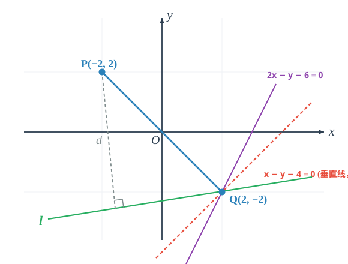

<meta data-alternate="https://freshmark.sunisalex.org/en/" data-article="true" data-canonical="https://freshmark.sunisalex.org/posts/math/family-of-straight-lines/" data-description="系统梳理平面解析几何中的直线系方程：从点斜式的线性组合本质出发，剖析过交点直线系 l1+λl2=0 的几何机理与“漏网之鱼”；详解角平分线、光线反射对称、截距与距离定参，以及逆用直线系求定点与最值（含无法取等的严格不等式陷阱）。" data-freshmark-page data-title="[解析几何]直线系 — Freshmark"><main><header class="container article-header"><a href="/" class="back-link">← 返回全部文章</a><p class="eyebrow article-subject">数学</p><h1>[解析几何]直线系</h1><p class="article-dek">系统梳理平面解析几何中的直线系方程：从点斜式的线性组合本质出发，剖析过交点直线系 l1+λl2=0 的几何机理与“漏网之鱼”；详解角平分线、光线反射对称、截距与距离定参，以及逆用直线系求定点与最值（含无法取等的严格不等式陷阱）。</p><div class="article-meta"><time datetime="2026-11-08">2026年11月8日</time><span>5 分钟阅读</span><span>解析几何 · 直线系 · 高考数学</span><span class="view-count" data-article-view-count hidden>本文访问量 <strong data-article-views></strong></span><a href="index.md" download>下载 Markdown</a><button type="button" class="article-share" data-share-article data-share-text="系统梳理平面解析几何中的直线系方程：从点斜式的线性组合本质出发，剖析过交点直线系 l1+λl2=0 的几何机理与“漏网之鱼”；详解角平分线、光线反射对称、截距与距离定参，以及逆用直线系求定点与最值（含无法取等的严格不等式陷阱）。" data-share-title="[解析几何]直线系"><span data-share-label>分享文章</span></button><output aria-live="polite" class="visually-hidden" data-share-status role="status"></output></div></header><div class="article-wrap"><aside class="toc"><div class="toc-head"><p>本文目录</p><button type="button" class="toc-toggle" aria-expanded="false" aria-label="展开或收起目录" data-toc-toggle><span class="toc-toggle-label">目录</span><span class="toc-toggle-icon" aria-hidden="true"></span></button></div><nav aria-label="目录" class="toc-links" data-toc-links><a href="#引" class="toc-level-1">引</a><a href="#为什么可以表示一组直线" class="toc-level-2">为什么可以表示一组直线</a><a href="#为什么经过-23" class="toc-level-2">为什么经过(-2,3)</a><a href="#为什么不包括x20" class="toc-level-2">为什么不包括x+2=0</a><a href="#能否包含除x20外所有直线" class="toc-level-2">能否包含除x+2=0外所有直线</a><a href="#凝练" class="toc-level-1">凝练</a><a href="#过交点的直线系" class="toc-level-2">过交点的直线系</a><a href="#平行于直线的直线系" class="toc-level-2">平行于直线的直线系</a><a href="#演兵i" class="toc-level-1">演兵I</a><a href="#例1" class="toc-level-2">例1</a><a href="#例2" class="toc-level-2">例2</a><a href="#例3" class="toc-level-2">例3</a><a href="#例4" class="toc-level-2">例4</a><a href="#例5" class="toc-level-2">例5</a><a href="#例6" class="toc-level-2">例6</a><a href="#演兵ii逆用直线系" class="toc-level-1">演兵II：逆用直线系</a><a href="#例7" class="toc-level-2">例7</a><a href="#例8经典陷阱无法取等的最大距离" class="toc-level-2">例8（经典陷阱：无法取等的“最大距离”）</a><a href="#结语" class="toc-level-1">结语</a></nav></aside><article class="prose"><h1 id="引">引</h1><p>这个世界上的直线，不一定要由两个点确定，也可以由其他直线确定。 <span class="math-expression math-display" data-math-source="y=k(x+2)+3" data-math-display></span> 观察这个过点(-2,3)的点斜式方程，可变形为: <span class="math-expression math-display" data-math-source="k(x+2)-(y-3)=0" data-math-display></span> 这表示经过直线<span class="math-expression math-inline" data-math-source="y-3=0,x+2=0"></span>交点(-2,3)的几乎所有直线(除<span class="math-expression math-inline" data-math-source="x+2=0"></span>外)。</p><h2 id="为什么可以表示一组直线">为什么可以表示一组直线</h2><p>直线是关于<span class="math-expression math-inline" data-math-source="x,y"></span>的一次方程，<span class="math-expression math-inline" data-math-source="y=k(x+2)+3"></span>符合要求</p><h2 id="为什么经过-23">为什么经过(-2,3)</h2><p>直线 <span class="math-expression math-display" data-math-source="y=k(x+2)+3" data-math-display></span> 是两条直线 <span class="math-expression math-display" data-math-source="x+2=0,y-3=0" data-math-display></span> 的线性组合。</p><p>点(-2,3)在后两条直线上，因此在它们线性组合表示的直线上.</p><h2 id="为什么不包括x20">为什么不包括x+2=0</h2><p>联立: <span class="math-expression math-display" data-math-source="x+2=0\\
y=k(x+2)+3" data-math-display></span> 我们得到<span class="math-expression math-inline" data-math-source="x=-2,y=3"></span>，这表明<span class="math-expression math-inline" data-math-source="x+2=0"></span>和<span class="math-expression math-inline" data-math-source="y=k(x+2)+3"></span>仅有(-2,3)一个交点.</p><p>可以理解为<span class="math-expression math-inline" data-math-source="y=k(x+2)+3"></span>与<span class="math-expression math-inline" data-math-source="y-3=0"></span>线性相关.</p><h2 id="能否包含除x20外所有直线">能否包含除x+2=0外所有直线</h2><p>任意取平面内点<span class="math-expression math-inline" data-math-source="P(m,n),m\ne-2"></span>，都可以确定唯一的 <span class="math-expression math-display" data-math-source="k=\frac{n-3}{m+2}" data-math-display></span> 对应唯一的直线.</p><h1 id="凝练">凝练</h1><h2 id="过交点的直线系">过交点的直线系</h2><p>类似的，用直线的线性组合表示过交点的几乎所有直线:</p><p>设<span class="math-expression math-inline" data-math-source="l_1:A_1x+B_1y+C_1=0,l_2:A_2x+B_2y+C_2=0"></span>是相交两直线，那么: <span class="math-expression math-display" data-math-source="l:A_1x+B_1y+C_1+\lambda(A_2x+B_2y+C_2)=0" data-math-display></span> 是经过<span class="math-expression math-inline" data-math-source="l_1"></span>和<span class="math-expression math-inline" data-math-source="l_2"></span>的交点的直线系方程，式中<span class="math-expression math-inline" data-math-source="\lambda\in\R"></span>（直线系<span class="math-expression math-inline" data-math-source="l"></span>不包括直线<span class="math-expression math-inline" data-math-source="l_2"></span>）.</p><h2 id="平行于直线的直线系">平行于直线的直线系</h2><p>由直线<span class="math-expression math-inline" data-math-source="l:Ax+By+C=0"></span>所确定的平行直线系的方程是: <span class="math-expression math-display" data-math-source="Ax+By+C&#39;=0" data-math-display></span></p><h1 id="演兵i">演兵I</h1><h2 id="例1">例1</h2><p>已知两直线<span class="math-expression math-inline" data-math-source="2x+3y-5=0,7x+15y+1=0"></span>相交于点P. 求出过点P且垂直于直线<span class="math-expression math-inline" data-math-source="12x-5y-1=0"></span>的直线方程.</p><p>首先排除直线系的“漏网之鱼”:</p><p>两直线<span class="math-expression math-inline" data-math-source="2x+3y-5=0,7x+15y+1=0"></span>显然与直线<span class="math-expression math-inline" data-math-source="12x-5y-1=0"></span>不垂直.</p><p>设直线: <span class="math-expression math-display" data-math-source="l:2x+3y-5+\lambda(7x+15y+1)=0\\
l:(7\lambda+2)x+(15\lambda+3)y+(\lambda-5)=0" data-math-display></span> 直线垂直，等价于直线法向量垂直: <span class="math-expression math-display" data-math-source="12(7\lambda+2)-5(15\lambda+3)=0\\
9\lambda+9=0\\
\lambda=-1" data-math-display></span> 回代直线: <span class="math-expression math-display" data-math-source="l:-5x-12y-6=0\\
l:5x+12y+6=0" data-math-display></span></p><h2 id="例2">例2</h2><p>求直线<span class="math-expression math-inline" data-math-source="l_1:A_1x+B_1y+C_1=0"></span>和直线<span class="math-expression math-inline" data-math-source="l_2:A_2x+B_2y+C_2=0"></span>的角平分线.</p><p>我们需要求出一条过<span class="math-expression math-inline" data-math-source="l_1,l_2"></span>交点的直线<span class="math-expression math-inline" data-math-source="l_3"></span>，其上的任意一点到<span class="math-expression math-inline" data-math-source="l_1,l_2"></span>的距离相同: <span class="math-expression math-display" data-math-source="l_3:A_1x+B_1y+C_1+\lambda(A_2x+B_2y+C_2)=0\\
P(x,y)\in l_3\\
d_{P\rightarrow l_1}=\frac{|A_1x+B_1y+C_1|}{\sqrt{A_1^2+B_1^2}}=\frac{|\lambda(A_2x+B_2y+C_2)|}{\sqrt{A_1^2+B_1^2}}\\
d_{P\rightarrow l_2}=\frac{|A_2x+B_2y+C_2|}{\sqrt{A_2^2+B_2^2}}" data-math-display></span> 一般地，点P不在<span class="math-expression math-inline" data-math-source="l_2"></span>上，即<span class="math-expression math-inline" data-math-source="A_2x+B_2y+C_2\ne0"></span>.</p><p>因此可以得出: <span class="math-expression math-display" data-math-source="|\lambda|=\sqrt{\frac{A_1^2+B_1^2}{A_2^2+B_2^2}}" data-math-display></span> 对应符号相反的两个<span class="math-expression math-inline" data-math-source="\lambda"></span>，分别对应内、外角平分线.</p><h2 id="例3">例3</h2><p>考虑一般情况，光线沿着直线<span class="math-expression math-inline" data-math-source="l_1:A_1x+B_1y+C_1=0"></span>射入，遇到直线<span class="math-expression math-inline" data-math-source="l_2:A_2x+B_2y+C_2=0"></span>即行反射，试求反射光线的直线方程:</p><p>思维路径：设反射光线为<span class="math-expression math-inline" data-math-source="l_3"></span>,其过<span class="math-expression math-inline" data-math-source="l_1,l_2"></span>的交点. <span class="math-expression math-display" data-math-source="l_3:A_1x+B_1y+C_1+\lambda(A_2x+B_2y+C_2)=0" data-math-display></span> 显然，镜面<span class="math-expression math-inline" data-math-source="l_2"></span>为<span class="math-expression math-inline" data-math-source="l_1,l_3"></span>的角平分线。由例2的结论，过<span class="math-expression math-inline" data-math-source="l_3"></span>与<span class="math-expression math-inline" data-math-source="l_1"></span>的角平分线可设为: <span class="math-expression math-display" data-math-source="l_2:[A_1x+B_1y+C_1+\lambda(A_2x+B_2y+C_2)]+\mu(A_1x+B_1y+C_1)=0\\
|\mu|=\sqrt{\frac{(A_1+\lambda A_2)^2+(B_1+\lambda B_2)^2}{A_1^2+B_1^2}}" data-math-display></span> 整理同类项得: <span class="math-expression math-display" data-math-source="l_2:(\mu+1)(A_1x+B_1y+C_1)+\lambda(A_2x+B_2y+C_2)=0" data-math-display></span> 由于反射光线与入射光线不重合（<span class="math-expression math-inline" data-math-source="\lambda\ne 0"></span>），该直线方程若要表示镜面<span class="math-expression math-inline" data-math-source="l_2:A_2x+B_2y+C_2=0"></span>，必须消去<span class="math-expression math-inline" data-math-source="l_1"></span>项，即: <span class="math-expression math-display" data-math-source="\mu+1=0\implies\mu=-1" data-math-display></span> 从而有: <span class="math-expression math-display" data-math-source="|\mu|=|-1|=1" data-math-display></span> 即: <span class="math-expression math-display" data-math-source="\sqrt{\frac{(A_1+\lambda A_2)^2+(B_1+\lambda B_2)^2}{A_1^2+B_1^2}}=1\\
\frac{(A_1+\lambda A_2)^2+(B_1+\lambda B_2)^2}{A_1^2+B_1^2}=1\\
2\lambda(A_1A_2+B_1B_2)+\lambda^2(A_2^2+B_2^2)=0\\
\lambda\Big[2(A_1A_2+B_1B_2)+\lambda(A_2^2+B_2^2)\Big]=0\\
\lambda=0\text{ 或 }\lambda=-\frac{2(A_1A_2+B_1B_2)}{A_2^2+B_2^2}" data-math-display></span> 显然<span class="math-expression math-inline" data-math-source="\lambda=0"></span>对应入射光线本身，舍去，故反射光线为: <span class="math-expression math-display" data-math-source="l_3:A_1x+B_1y+C_1-\frac{2(A_1A_2+B_1B_2)}{A_2^2+B_2^2}(A_2x+B_2y+C_2)=0" data-math-display></span></p><h2 id="例4">例4</h2><p>已知直线<span class="math-expression math-inline" data-math-source="l:2x-3y+1=0"></span>，求直线<span class="math-expression math-inline" data-math-source="m:3x-2y-6=0"></span>关于直线<span class="math-expression math-inline" data-math-source="l"></span>对称的直线<span class="math-expression math-inline" data-math-source="m&#39;"></span>的方程.</p><p>解： 两直线相交，对称直线必属于过其交点的直线系。由<strong>例3</strong>得出的反射与对称直线公式，直接代入： <span class="math-expression math-display" data-math-source="m&#39;:(3x-2y-6)-\frac{2(3\times 2+(-2)\times(-3))}{2^2+(-3)^2}(2x-3y+1)=0\\
m&#39;:(3x-2y-6)-\frac{24}{13}(2x-3y+1)=0" data-math-display></span> 两边同乘13并展开： <span class="math-expression math-display" data-math-source="(39x-26y-78)-24(2x-3y+1)=0\\
-9x+46y-102=0\implies 9x-46y+102=0" data-math-display></span> （原本极为繁琐的点对称或交点+斜率法，借助例3推导的公式仅需口算一步成型！）</p><h2 id="例5">例5</h2><p>已知两直线<span class="math-expression math-inline" data-math-source="l_1:2x-3y+1=0"></span>和<span class="math-expression math-inline" data-math-source="l_2:x+y-2=0"></span>相交于点P. 求经过点P且在两坐标轴上截距相等的直线方程.</p><p>解：</p><p><strong>第一步：排查直线系的“漏网之鱼”<span class="math-expression math-inline" data-math-source="l_2"></span></strong></p><p>在<span class="math-expression math-inline" data-math-source="l_2:x+y-2=0"></span>中，令<span class="math-expression math-inline" data-math-source="x=0"></span>得<span class="math-expression math-inline" data-math-source="y=2"></span>；令<span class="math-expression math-inline" data-math-source="y=0"></span>得<span class="math-expression math-inline" data-math-source="x=2"></span>. 直线<span class="math-expression math-inline" data-math-source="l_2"></span>在两坐标轴上的截距均为2，满足截距相等的条件！ 因此，<span class="math-expression math-inline" data-math-source="l_2"></span>本身就是一条满足题意的直线: <span class="math-expression math-display" data-math-source="x+y-2=0" data-math-display></span></p><p><strong>第二步：设直线系求解其余直线</strong></p><p>设所求直线方程为: <span class="math-expression math-display" data-math-source="l:(2x-3y+1)+\lambda(x+y-2)=0" data-math-display></span> 整理为一般式: <span class="math-expression math-display" data-math-source="(\lambda+2)x+(\lambda-3)y+(1-2\lambda)=0" data-math-display></span></p><p>对截距进行分类讨论:</p><ol><li><p><strong>截距均为0（直线过原点）</strong> 此时常数项必须为0: <span class="math-expression math-display" data-math-source="1-2\lambda=0\implies\lambda=\frac{1}{2}" data-math-display></span> 代入直线系方程得: <span class="math-expression math-display" data-math-source="\frac{5}{2}x-\frac{5}{2}y=0\implies x-y=0" data-math-display></span></p></li><li><p><strong>截距不为0</strong> 令<span class="math-expression math-inline" data-math-source="y=0"></span>求得横截距，令<span class="math-expression math-inline" data-math-source="x=0"></span>求得纵截距: <span class="math-expression math-display" data-math-source="a=-\frac{1-2\lambda}{\lambda+2},\quad b=-\frac{1-2\lambda}{\lambda-3}" data-math-display></span> 由<span class="math-expression math-inline" data-math-source="a=b\ne 0"></span>得: <span class="math-expression math-display" data-math-source="\lambda+2=\lambda-3\implies 2=-3\quad\text{（无解）}" data-math-display></span></p></li></ol><p>综上所述，所求直线方程为: <span class="math-expression math-display" data-math-source="x-y=0\quad\text{或}\quad x+y-2=0" data-math-display></span></p><blockquote><p><strong>反思</strong>：如果直接设截距式或不用直线系排查漏网之鱼，很容易漏掉<span class="math-expression math-inline" data-math-source="x+y-2=0"></span>这条直线。这就是我们在“凝练”中反复强调直线系<span class="math-expression math-inline" data-math-source="l_1+\lambda l_2=0"></span>不包含<span class="math-expression math-inline" data-math-source="l_2"></span>的实战意义！</p></blockquote><h2 id="例6">例6</h2><p>已知两相交直线<span class="math-expression math-inline" data-math-source="l_1:x+y-3=0"></span>和<span class="math-expression math-inline" data-math-source="l_2:2x-y=0"></span>. 求经过其交点，且到坐标原点距离等于1的直线方程.</p><p>解：</p><p><strong>第一步：排查漏网之鱼<span class="math-expression math-inline" data-math-source="l_2"></span></strong></p><p>原点到直线<span class="math-expression math-inline" data-math-source="l_2:2x-y=0"></span>的距离为0（直线过原点），不等于1，故<span class="math-expression math-inline" data-math-source="l_2"></span>不合题意.</p><p><strong>第二步：设直线系</strong></p><p>设所求直线方程为: <span class="math-expression math-display" data-math-source="l:(x+y-3)+\lambda(2x-y)=0" data-math-display></span> 整理为一般式: <span class="math-expression math-display" data-math-source="(2\lambda+1)x+(1-\lambda)y-3=0" data-math-display></span></p><p><strong>第三步：利用点到直线距离公式定参数</strong></p><p>原点<span class="math-expression math-inline" data-math-source="(0,0)"></span>到直线<span class="math-expression math-inline" data-math-source="l"></span>的距离<span class="math-expression math-inline" data-math-source="d=1"></span>: <span class="math-expression math-display" data-math-source="\frac{|-3|}{\sqrt{(2\lambda+1)^2+(1-\lambda)^2}}=1" data-math-display></span> 两边平方得: <span class="math-expression math-display" data-math-source="9=(4\lambda^2+4\lambda+1)+(\lambda^2-2\lambda+1)\\
9=5\lambda^2+2\lambda+2\\
5\lambda^2+2\lambda-7=0" data-math-display></span> 因式分解: <span class="math-expression math-display" data-math-source="(5\lambda+7)(\lambda-1)=0" data-math-display></span> 解得: <span class="math-expression math-display" data-math-source="\lambda_1=1,\quad\lambda_2=-\frac{7}{5}" data-math-display></span></p><p><strong>第四步：回代求方程</strong></p><ul><li>当<span class="math-expression math-inline" data-math-source="\lambda=1"></span>时: <span class="math-expression math-display" data-math-source="(2\times 1+1)x+(1-1)y-3=0\implies 3x-3=0\implies x-1=0" data-math-display></span></li><li>当<span class="math-expression math-inline" data-math-source="\lambda=-\frac{7}{5}"></span>时: <span class="math-expression math-display" data-math-source="\Big(2\times\Big(-\frac{7}{5}\Big)+1\Big)x+\Big(1-\Big(-\frac{7}{5}\Big)\Big)y-3=0\\
-\frac{9}{5}x+\frac{12}{5}y-3=0" data-math-display></span> 两边同乘<span class="math-expression math-inline" data-math-source="-\frac{5}{3}"></span>整理得: <span class="math-expression math-display" data-math-source="3x-4y+5=0" data-math-display></span></li></ul><p>综上，所求直线方程为: <span class="math-expression math-display" data-math-source="x-1=0\quad\text{或}\quad 3x-4y+5=0" data-math-display></span></p><h1 id="演兵ii逆用直线系">演兵II：逆用直线系</h1><p>直线系不仅可以顺向用于“设过交点的未知直线”，还可以逆向用于“破解含参直线恒过定点与极值问题”。</p><h2 id="例7">例7</h2><p>已知含参数<span class="math-expression math-inline" data-math-source="m"></span>的直线方程为: <span class="math-expression math-display" data-math-source="l:(2m+1)x+(m+1)y-7m-4=0\quad(m\in\R)" data-math-display></span> (1) 证明：无论<span class="math-expression math-inline" data-math-source="m"></span>取何实数，直线<span class="math-expression math-inline" data-math-source="l"></span>恒过定点P，并求出点P的坐标； (2) 已知平面内有点<span class="math-expression math-inline" data-math-source="A(1,2)"></span>，求点A到直线<span class="math-expression math-inline" data-math-source="l"></span>的最大距离，并求此时直线<span class="math-expression math-inline" data-math-source="l"></span>的方程.</p><p>解：</p><p><strong>(1) 证明恒过定点</strong></p><p>将直线方程按参数<span class="math-expression math-inline" data-math-source="m"></span>进行整理（降幂排列、提取公因式<span class="math-expression math-inline" data-math-source="m"></span>）: <span class="math-expression math-display" data-math-source="(x+y-4)+m(2x+y-7)=0" data-math-display></span> 对比过交点的直线系标准形式<span class="math-expression math-inline" data-math-source="l_1+\lambda l_2=0"></span>，式中的<span class="math-expression math-inline" data-math-source="m"></span>充当了参数<span class="math-expression math-inline" data-math-source="\lambda"></span>的角色！ 要使上述等式对任意实数<span class="math-expression math-inline" data-math-source="m"></span>都恒成立，充分必要条件是两个括号内的代数式同时为0: <span class="math-expression math-display" data-math-source="\begin{cases} x+y-4=0\\ 2x+y-7=0 \end{cases}" data-math-display></span> 联立解得: <span class="math-expression math-display" data-math-source="\begin{cases} x=3\\ y=1 \end{cases}" data-math-display></span> 因此，无论<span class="math-expression math-inline" data-math-source="m"></span>为何实数，直线<span class="math-expression math-inline" data-math-source="l"></span>恒过定点<span class="math-expression math-inline" data-math-source="P(3,1)"></span>.</p><p><strong>(2) 求距离最大值与直线方程</strong></p><p><strong>几何分析</strong>： 设过点<span class="math-expression math-inline" data-math-source="A"></span>向直线<span class="math-expression math-inline" data-math-source="l"></span>作垂线，垂足为<span class="math-expression math-inline" data-math-source="H"></span>. 因为直线<span class="math-expression math-inline" data-math-source="l"></span>恒过定点<span class="math-expression math-inline" data-math-source="P"></span>，所以在直角三角形<span class="math-expression math-inline" data-math-source="\triangle APH"></span>中，斜边大于等于直角边: <span class="math-expression math-display" data-math-source="d=|AH|\le |AP|" data-math-display></span> 当且仅当垂足<span class="math-expression math-inline" data-math-source="H"></span>与定点<span class="math-expression math-inline" data-math-source="P"></span>重合时（即直线<span class="math-expression math-inline" data-math-source="l\perp AP"></span>时），点A到直线<span class="math-expression math-inline" data-math-source="l"></span>的距离取得最大值<span class="math-expression math-inline" data-math-source="d_{\max}=|AP|"></span>.</p><p>计算距离最大值: <span class="math-expression math-display" data-math-source="d_{\max}=|AP|=\sqrt{(3-1)^2+(1-2)^2}=\sqrt{4+1}=\sqrt{5}" data-math-display></span></p><p>求此时的直线方程: 线段<span class="math-expression math-inline" data-math-source="AP"></span>的斜率为: <span class="math-expression math-display" data-math-source="k_{AP}=\frac{1-2}{3-1}=-\frac{1}{2}" data-math-display></span> 因为此时<span class="math-expression math-inline" data-math-source="l\perp AP"></span>，所以直线的斜率: <span class="math-expression math-display" data-math-source="k_l=-\frac{1}{k_{AP}}=2" data-math-display></span> 由点斜式写出此时直线的方程: <span class="math-expression math-display" data-math-source="y-1=2(x-3)\implies 2x-y-5=0" data-math-display></span> （此时对应的参数值为<span class="math-expression math-inline" data-math-source="m=-3"></span>，符合题意）</p><h2 id="例8经典陷阱无法取等的最大距离">例8（经典陷阱：无法取等的“最大距离”）</h2><p>证明：无论 <span class="math-expression math-inline" data-math-source="\lambda"></span>&#32;取何值，直线 <span class="math-expression math-inline" data-math-source="l"></span>: <span class="math-expression math-display" data-math-source="(2+\lambda)x - (1+\lambda)y - 2(3+2\lambda) = 0" data-math-display></span> 与点 <span class="math-expression math-inline" data-math-source="P(-2, 2)"></span>&#32;的距离 <span class="math-expression math-inline" data-math-source="d"></span>&#32;都只能小于 <span class="math-expression math-inline" data-math-source="4\sqrt{2}"></span>。</p><p></p><p><strong>证明：</strong></p><p><strong>第一步：整理为直线系的标准形式，找出恒过的定点</strong></p><p>将直线 <span class="math-expression math-inline" data-math-source="l"></span>&#32;的方程按参数 <span class="math-expression math-inline" data-math-source="\lambda"></span>&#32;进行分解与降幂整理： <span class="math-expression math-display" data-math-source="(2x - y - 6) + \lambda(x - y - 4) = 0" data-math-display></span></p><p>由此可知，直线 <span class="math-expression math-inline" data-math-source="l"></span>&#32;表示经过两基底直线： <span class="math-expression math-display" data-math-source="l_1: 2x - y - 6 = 0,\quad l_2: x - y - 4 = 0" data-math-display></span> 交点的直线系（但<strong>不包括直线 <span class="math-expression math-inline" data-math-source="l_2"></span>&#32;本身</strong>）。</p><p>联立两直线方程求解交点 <span class="math-expression math-inline" data-math-source="Q"></span>： <span class="math-expression math-display" data-math-source="\begin{cases} 2x - y - 6 = 0\\ x - y - 4 = 0 \end{cases}\implies\begin{cases} x = 2\\ y = -2 \end{cases}" data-math-display></span> 即直线 <span class="math-expression math-inline" data-math-source="l"></span>&#32;恒过定点 <span class="math-expression math-inline" data-math-source="Q(2, -2)"></span>。</p><p><strong>第二步：几何分析定点距离的上界</strong></p><p>计算定点 <span class="math-expression math-inline" data-math-source="P(-2, 2)"></span>&#32;与定点 <span class="math-expression math-inline" data-math-source="Q(2, -2)"></span>&#32;之间的距离： <span class="math-expression math-display" data-math-source="|PQ| = \sqrt{[2 - (-2)]^2 + [-2 - 2]^2} = \sqrt{4^2 + (-4)^2} = 4\sqrt{2}" data-math-display></span></p><p>由平面几何性质可知，对于平面内任意一条过定点 <span class="math-expression math-inline" data-math-source="Q"></span>&#32;的直线 <span class="math-expression math-inline" data-math-source="l"></span>： 过点 <span class="math-expression math-inline" data-math-source="P"></span>&#32;向直线 <span class="math-expression math-inline" data-math-source="l"></span>&#32;作垂线，垂足为 <span class="math-expression math-inline" data-math-source="H"></span>。在直角三角形 <span class="math-expression math-inline" data-math-source="\triangle PQH"></span>&#32;中，斜边不小于直角边： <span class="math-expression math-display" data-math-source="d = |PH| \le |PQ| = 4\sqrt{2}" data-math-display></span> 当且仅当垂足 <span class="math-expression math-inline" data-math-source="H"></span>&#32;与点 <span class="math-expression math-inline" data-math-source="Q"></span>&#32;重合、即 <strong><span class="math-expression math-inline" data-math-source="l \perp PQ"></span></strong> 时，距离才能取得理论上的几何最大值 <span class="math-expression math-inline" data-math-source="|PQ|"></span>。</p><p><strong>第三步：检验垂直极限直线是否属于直线系（排查“漏网之鱼”）</strong></p><p>求过点 <span class="math-expression math-inline" data-math-source="Q(2, -2)"></span>&#32;且垂直于 <span class="math-expression math-inline" data-math-source="PQ"></span>&#32;的直线方程：</p><ul><li>直线 <span class="math-expression math-inline" data-math-source="PQ"></span>&#32;的斜率为： <span class="math-expression math-display" data-math-source="k_{PQ} = \frac{-2 - 2}{2 - (-2)} = -1" data-math-display></span></li><li>故垂直于 <span class="math-expression math-inline" data-math-source="PQ"></span>&#32;的垂线斜率为 <span class="math-expression math-inline" data-math-source="k = -\dfrac{1}{k_{PQ}} = 1"></span>；</li><li>由点斜式可得过 <span class="math-expression math-inline" data-math-source="Q"></span>&#32;点且垂直于 <span class="math-expression math-inline" data-math-source="PQ"></span>&#32;的直线方程为： <span class="math-expression math-display" data-math-source="y - (-2) = 1\cdot(x - 2)\implies x - y - 4 = 0" data-math-display></span></li></ul><p><strong>至关重要的一步</strong>： 这条唯一能使距离取到最大值 <span class="math-expression math-inline" data-math-source="4\sqrt{2}"></span>&#32;的垂线，恰恰就是直线系 <span class="math-expression math-inline" data-math-source="l_1 + \lambda l_2 = 0"></span>&#32;中<strong>被遗漏的直线 <span class="math-expression math-inline" data-math-source="l_2: x - y - 4 = 0"></span></strong>！</p><p>因为无论实数 <span class="math-expression math-inline" data-math-source="\lambda"></span>&#32;取何有限值，直线方程 <span class="math-expression math-inline" data-math-source="(2x - y - 6) + \lambda(x - y - 4) = 0"></span>&#32;中 <span class="math-expression math-inline" data-math-source="l_1"></span>&#32;的系数恒为 <span class="math-expression math-inline" data-math-source="1 \ne 0"></span>，所以该方程<strong>永远无法表示直线 <span class="math-expression math-inline" data-math-source="x - y - 4 = 0"></span></strong>。</p><p><strong>结论</strong>： 直线 <span class="math-expression math-inline" data-math-source="l"></span>&#32;永远无法与 <span class="math-expression math-inline" data-math-source="PQ"></span>&#32;垂直，等号永远无法取到，因此： <span class="math-expression math-display" data-math-source="d &lt; 4\sqrt{2}" data-math-display></span></p><blockquote><p><strong>核心点睛</strong>：<br>本题是高考与自主招生/强基计划中考察直线系严密性的“常青树”。很多同学仅通过几何观察直观得出 <span class="math-expression math-inline" data-math-source="d \le |PQ| = 4\sqrt{2}"></span>，便草率断定最大值是 <span class="math-expression math-inline" data-math-source="4\sqrt{2}"></span>，却忽略了参数直线系中 <span class="math-expression math-inline" data-math-source="l_2"></span>&#32;的不可达性。只有深刻理解直线系 <span class="math-expression math-inline" data-math-source="l_1 + \lambda l_2 = 0"></span>“天然缺失 <span class="math-expression math-inline" data-math-source="l_2"></span>”的代数本质，才能真正洞察为什么此处必须是严格小于 <span class="math-expression math-inline" data-math-source="d &lt; 4\sqrt{2}"></span>！</p></blockquote><h1 id="结语">结语</h1><p>直线系方程的核心威力在于<strong>“设而不求”</strong>与<strong>“参数分离”</strong>：</p><ol><li><strong>正向求解</strong>：无需耗时联立两直线求交点坐标，直接设为<span class="math-expression math-inline" data-math-source="l_1+\lambda l_2=0"></span>，将相交的几何约束自动内嵌于方程结构中；</li><li><strong>严防漏洞</strong>：牢记<span class="math-expression math-inline" data-math-source="l_1+\lambda l_2=0"></span>不包含<span class="math-expression math-inline" data-math-source="l_2"></span>，在涉及截距、平行、垂直与距离时，必须先排查<span class="math-expression math-inline" data-math-source="l_2"></span>；</li><li><strong>逆向探针</strong>：面对含参直线<span class="math-expression math-inline" data-math-source="(A_1x+B_1y+C_1)+m(A_2x+B_2y+C_2)=0"></span>，将其视为两条基底直线的线性组合，联立即可秒杀定点与极值问题。</li></ol></article></div><section class="container comments" data-comments data-comments-path="/posts/math/family-of-straight-lines/"><div class="comments-head"><div><p class="eyebrow">评论</p><h2 data-comments-title>评论</h2></div><p>登录后参与讨论。注册时只需验证一次邮箱。</p></div><div class="comment-list" aria-live="polite" data-comment-list><p class="comment-state" data-comment-state>正在加载评论…</p></div><button type="button" class="comment-more" data-comments-more hidden>加载更早的评论</button><div class="comment-auth" data-comment-auth><p class="comment-auth-status" data-auth-loading>正在检查登录状态…</p><div hidden data-auth-guest><form class="comment-auth-form" data-auth-login><h3>登录后评论</h3><label>邮箱<input autocomplete="email" name="email" maxlength="254" required type="email"></label><label>密码<input autocomplete="current-password" name="password" maxlength="128" required type="password"></label><div class="comment-form-foot"><p class="comment-form-status" role="status" data-auth-login-status></p><button type="submit">登录</button></div></form><details class="comment-register"><summary>还没有账号？注册</summary><form class="comment-auth-form" data-auth-register><label>昵称<input autocomplete="name" name="name" maxlength="40" required></label><label>邮箱<input autocomplete="email" name="email" maxlength="254" required type="email"></label><label>密码<input autocomplete="new-password" name="password" maxlength="128" required type="password" minlength="8"></label><p class="comment-auth-hint">至少 8 个字符。</p><div class="comment-form-foot"><p class="comment-form-status" role="status" data-auth-register-status></p><button type="submit">注册</button></div></form></details></div><form class="comment-auth-form" hidden data-auth-verify><p>验证码已发送到邮箱，请在 10 分钟内完成注册。</p><label>六位验证码<input autocomplete="one-time-code" name="code" maxlength="6" required minlength="6" inputmode="numeric" pattern="[0-9]{6}"></label><div class="comment-form-foot"><p class="comment-form-status" role="status" data-auth-verify-status></p><button type="submit">完成注册</button></div></form><div class="comment-auth-user" data-auth-user hidden><p>当前登录： <strong data-auth-user-name></strong> <span data-auth-user-email></span></p><button type="button" data-auth-logout>退出登录</button></div></div><form class="comment-form" hidden data-comment-form><label>评论内容<textarea maxlength="2000" minlength="2" name="body" placeholder="写下你的想法…" required rows="5"></textarea></label><p class="comment-markdown-hint">支持 Markdown：加粗、链接、引用、列表和代码。</p><label aria-hidden="true" class="comment-honeypot">Website<input autocomplete="off" name="website" tabindex="-1"></label><div class="comment-form-foot"><p class="comment-form-status" role="status" data-comment-form-status></p><button type="submit" data-comment-submit>发表评论</button></div></form></section></main>